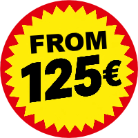

Breakdown assistance
Are you on the road and does your car let you down? Then the cause can vary. We analyse your situation, look at the options and offer the most efficient solution.
Need a towing service in Hasselt?
Then Faster is your partner! Broken down on the way to an afternoon of shopping in Hasselt? Or does your car not start in the car park after a day at the Fashion Museum or city museum? We come to help you!
“Zeer tevreden, binnen de 15 minuten waren ze al aanwezig en qua prijs is dit gewoon de max!!! Zeker een aanrader!!!”
Alattim Tokmak · Google review
“Perfecte service. Staat zelf klaar om 1u 's nachts. Was binnen de 20 min aanwezig. En nog voor een goede prijs.”
nabil Choukair · Google review
“Iemand die zijn job goed kent, zeer vriendelijke chauffeur, professioneel geholpen, bedankt om snel te zijn 👍”
Karen Vardanyan · Google review
“Very professional. I will always recommend.”
ibrahim lucky · Google review
“Ik stond stil op de snelweg, het was zeer gevaarlijk met mijn vrouw en kinderen. Was heel snel ter plaatse en de goedkoopste die er was op dat moment.”
Marko Gheis · Google review
“Super snel opkomen dagen en de prijs was zoals afgesproken, geen gefoefel.”
TheRealM · Google review
“Op zondag pech gehad in Breda en meteen geholpen. Snelle, professionele en vriendelijke takeldienst. Bedankt!!”
Portsurmer · Google review
“Zeer tevreden, zeer goede service.”
Chayden Van Harneveldt · Google review
About 20 minutes to be on site in Hasselt, from €125.

“Need help in Hasselt? In the busy centre? That is no problem for us. We will come and get you going again!”Owner of Faster
The centre of Hasselt can be busy, and breaking down on a busy artery is on nobody’s wish list. But don’t worry: if you call us, we will get there as quickly as possible to help you.
We don’t only rush to help you in the centre; in the sub-municipalities too we can be your rescuer in need. Get a puncture on the country roads in Kermt, Spalbeek, Stevoort or Sint-Lambrechts-Herk? Break down with your car along the Albert Canal in Stokrooie, at the castle of Wimmertingen or at the Herkenrode abbey site in Kuringen? Or need breakdown assistance in the fruit region of Kortessem? The sub-municipalities of Hasselt are also within our service area.
Did you know that our service area reaches even further? We are also active in Zonhoven, Diepenbeek, Genk and Lummen. More information about our service area in Limburg can be found here.
Owner of Faster
We work with a price agreed in advance, so you know what you are getting into. A Faster towing service comes out in Hasselt from 125 euros.
We focus on reliability and personal contact. That is why we think it is important to give our customers good and complete information. If you contact us to come out for an intervention, we discuss a price fixed in advance.
For cars and vans up to 3.5 tonnes.
Are you on the road and does your car let you down? Then the cause can vary. We analyse your situation, look at the options and offer the most efficient solution.
Sometimes the damage after an accident or the cause of your breakdown is bigger than expected and towing is necessary. We make sure your vehicle is taken away with care.
Would you like your car to be taken to a place or garage of your choice? That is possible!
Different vehicles, different needs, different solutions. We can offer solutions for vehicles up to 3.5 tonnes.
Stuck in the middle of the road? Or are you at a busy traffic point where you can no longer go anywhere with your broken-down vehicle? Call Faster immediately or WhatsApp us! We can be reached 24/7 to help you as quickly as possible.
Do you have a question you would like to discuss beforehand, or a future transport you want to arrange? Send a message via the form. We will reply as soon as possible.
Vehicle problems come in all shapes. We try to find a suitable solution for every situation. Some problems occur more often than others.
A day in Hasselt and your car won’t start any more? Parked in an underground car park and you can’t get your car started? A flat battery may be the cause. If safety and technical conditions allow, we try an intervention with a booster on the spot.
It can happen any time and anywhere: a flat tyre. Often the most efficient and cheapest solution is to have your vehicle taken to a tyre centre. You can count on us for that too.
Need a towing service or towing service on Hasselt’s beautiful Groene Boulevard? You can count on Faster.
Owner of Faster
Safety above all! A breakdown with your vehicle is a pain, but think first of your safety, then of the rest.
Owner of Faster
There are several busy roads in and around Hasselt, such as the E313/N2 towards Lummen and the E314. But on the Groene Boulevard (R70) around Hasselt, on the N74 towards Zonhoven or on the N80 towards Sint-Truiden too, many vehicles pass every day. Don’t let the heavy traffic put you off. We are used to navigating through it and come to help you!
Practical answers for when you break down in and around Hasselt.
From Zonhoven about 20 minutes to be on site, with a price agreed in advance.
